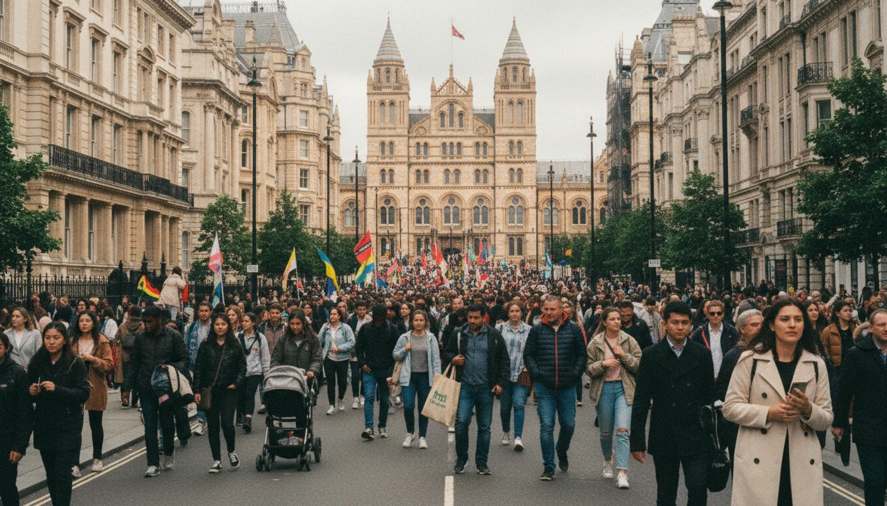
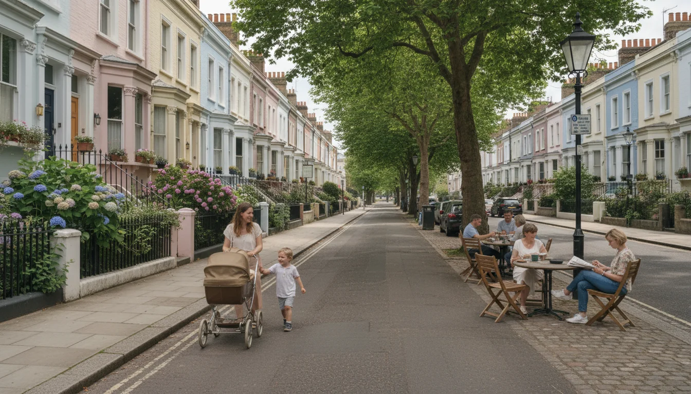

סאות׳ קנזינגטון - השכונה שכולם ממליצים עליה ואני לא
כשמישהו בארץ שואל אותי על סאות׳ קנזינגטון לונדון, הוא בדרך כלל אומר אחד משני דברים. או ״שמעתי שזאת השכונה לישראלים״, או ״חברה שלי בדיוק קנתה שם״. בשני המקרים אני עונה את אותו הדבר. והתשובה בדרך כלל מפתיעה אותם.
אני אגיד אותה גם כאן. סאות׳ קנזינגטון היא שכונה יפה. הגלויה אמיתית. אבל אם באתם לשאול אותי איפה לקנות דירה שנייה בלונדון, סאות׳ קנזינגטון לא ברשימה שלי. ויש לי סיבות טובות, אחרי יותר מעשרים שנה באזור.
למה כולם ממליצים על סאות׳ קנזינגטון
קל להבין את המשיכה. האזור יושב ב- Zone 1, חמש דקות הליכה מהייד פארק. בניינים לבנים עם מעקות ברזל, רחובות שקטים עם עצים, שלושה מוזיאונים ברמה עולמית במרחק הליכה זה מזה. Thurloe Square בבוקר של יום ראשון נראה בדיוק כמו התמונה שהראיתם לבעל על המטוס.
שיפצתי שם mews house (בית בסמטה, אורוות לשעבר) לפני כמה שנים - אחד מתוך עשרות פרויקטים שעשיתי בלונדון - פרויקט של שלוש קומות, חניה שהפכה לסלון, עליית גג שהפכה לסוויטת הורים. הלכתי ברחובות האלה עשרות פעמים, בבוקר, בערב, ביום חול, בסופשבוע, בחורף ובקיץ. אני יודעת על מה אנחנו מדברים כשאנחנו מדברים על סאות׳ קנזינגטון לונדון. האזור באמת יפה, באמת נוח, ובאמת מרגיש כמו לונדון שדמיינתם.
הפרויקט הזה גם לימד אותי הרבה על מה שהשכונה לא מספרת על עצמה. כל שבוע בבוקר ראיתי את הסיבוב הקבוע של מוניות שחורות שמורידות תיירים לפני פתיחת המוזיאונים. את העובדים שהגיעו בשעות לא-הגיוניות מה-stations הרחוקות כי ב-SW7 אף אחד לא גר ליד העבודה שלו. את השכנים שבחצי מהמקרים לא היו באמת שכנים - הם היו שוכרים דיפלומטיים שמתחלפים כל שנתיים. אני זוכרת גם שלקוחה אחת שלנו, אחרי שנתיים של בעלות, פשוט עברה ל-Marylebone. ״זה לא שהיה רע,״ היא אמרה לי. ״זה פשוט לא הרגיש כמו הבית שלי.״
זה החלק הקל. עכשיו הקשה.
מה שרואים בביקור מול מה שרואים כבעלים
לבקר בסאות׳ קן בסופשבוע זה דבר אחד. להיות בעלים של דירה שם זה דבר אחר לגמרי.
בביקור, אתם רואים את המוזיאון ואת הפארק. בבעלות, אתם רואים את מה שקורה בין זה לזה. ואת מה שקורה שישה ימים בשבוע שאתם לא בלונדון.
כל השאר בכתבה הוא על הצד הזה. על מה שהשכונה עושה בזמן שאתם לא מסתכלים.
השגרירות הישראלית, השגרירות האיראנית, והמחאות
בואו נתחיל במה שישראלים בדרך כלל לא שומעים עליו בסיורי נדלן.
השגרירות הישראלית בלונדון נמצאת בכתובת 2 Palace Green, Kensington Palace Gardens. זה טכנית W8, אבל הליכה של עשר דקות מסאות׳ קן. מאז אוקטובר 2023, צעדות פרו-פלסטיניות התקרבו פעם אחר פעם אל השגרירות. בספטמבר 2024 הצעדה הגדולה הראשונה נגמרה ממש מחוץ לשגרירות, עם מחסומי מתכת ועשרות שוטרים. במרץ 2025, אלפים שוב התקבצו שם.
ולא רק השגרירות הישראלית. הקונסוליה האיראנית נמצאת ב- 50 Kensington Court, בתוך SW7 עצמה. ביוני 2025 הפגנה משותפת פרו-פלסטינית ופרו-איראנית הביאה 15,000 איש. תומכי ישראל ותומכי פלסטין התעמתו בתחנת התחתית High Street Kensington, עם משטרה שניסתה להפריד ביניהם.
שכונה עם שתי שגרירויות רגישות במרחק הליכה מקבלת אנרגיה מסוימת. זה לא סיפור של בטיחות, זה סיפור של מה אתם רוצים לעבור כשאתם יוצאים לקנות חלב. נערה ישראלית בת 14 שיוצאת לקפה בסופשבוע יכולה למצוא את עצמה בצעדה של עשרות אלפים עם כרזות נגד המדינה שלה. חשבו על זה לפני שאתם חותמים.
וחוץ מהימים ה״גדולים״, יש גם את הרקע היומיומי - ניידות משטרה בקצוות Kensington Palace Gardens כל הזמן, כבישים שסגורים בלי הודעה כשבא שר חוץ מאיזו מדינה, מכוניות עם חלונות כהים וצלחות רישוי דיפלומטיות. זו פשוט לא שכונת מגורים רגילה. זאת שכונה שחיה חצי מהזמן סביב דיפלומטיה ופוליטיקה בינלאומית, וחצי מהזמן מתיימרת להיות מגורית שקטה. הבעיה היא שאתם לא יודעים מראש איזה יום תקבלו.
הבית שכל האורות כבויים בו
יש סוג אחר של שכנים שצריך לדבר עליו. אלה שלא שם.
RBKC (Royal Borough of Kensington and Chelsea, הרשות המקומית) העריכה ב- 2015 שבאזורים מסוימים בתוך הרובע עד אחד מכל ארבעה בתים פשוט ריקים. 80% מהנכסים בבעלות זרה ברובע רשומים במקלטי מס. One Kensington Gardens, בניין של 97 דירות במחירים שבין 6 ל-30 מיליון פאונד, ידוע כבניין עם המעט אורות בלילה.
ומאז 2022, מאז הפלישה לאוקראינה, אחוזות של אוליגרכים רוסיים בסנקציות יושבות בריקנות במרחק הליכה. ברחוב Prince of Wales Terrace, אחוזות בשווי 16 מיליון פאונד מאוכלסות רק על ידי יונים. מאז שהוטלו הסנקציות, אסור לבעלים לשמור על הנכסים, וחצר הקידמית מתפוררת לעיני כל. השכנים מתלוננים על ירידת ערך הנכסים הסמוכים.
לפני שקונים, תסתכלו כמה חלונות בבניין שלכם מאורים באוגוסט. אחר כך תסתכלו בפברואר. אתם בטח לא תופתעו, אבל עדיף שתראו את זה במו עיניכם לפני שאתם חותמים, לא אחרי.
מי שמצפה לשכונה עם אינטראקציה יומיומית - שיחה עם הדיירים בקומה, ילדים שמשחקים יחד במסדרון, שכנה שמקבלת חבילה עבורכם כשאתם בארץ - צריך לדעת שהסיכויים לכך פה נמוכים. הרבה מהשכנים שלכם יהיו שוכרים לזמן קצר, דיפלומטים שמתחלפים כל שנתיים, או פשוט חלונות חשוכים. זה לא בניין, זה חניון רכבים ישנים של שוכרים עוברים.
11 מיליון תיירים בשנה - לא רק במוזיאונים

המוזיאון להיסטוריה של הטבע שבר שיא ב-2025 עם 7.1 מיליון מבקרים בשנה, עלייה של 13% לעומת 2024. שלושת המוזיאונים ברחוב Exhibition Road יחד מושכים מעל 11 מיליון מבקרים בשנה.
ו- Exhibition Road הוא רחוב מגורים. הוא גם ה- ״shared space״ הגדול בבריטניה, כלומר מעבר משותף לרכבים והולכי רגל, החלטת תכנון שהתקבלה ב-2012. אחד עשר מיליון אנשים בשנה עוברים ליד דלת הכניסה שלכם בדרך למוזיאון, יוצאים ל- Old Brompton Road, תופסים שולחן בבית הקפה שתכננתם לשבת בו. בחודשי חופשה ובסופי שבוע חמים, השכונה היא מסלול תיירותי, לא שכונה.
הסטטיסטיקה מחזקת את זה. ב- Kensington and Chelsea שיעור עבירות ״גניבה מהגוף״ הוא פי 7.19 מהממוצע הלאומי. הרובע מדורג במקום השני או השלישי ברובעי לונדון במדדי פשיעה כלליים. גל חטיפות הטלפונים הנייד של 2025 מיפה את נייטסברידג׳, צ׳לסי, קנזינגטון ומייפר כנקודות החמות. זה לא אזהרת בטיחות, זו פשוט תוצאה ישירה - זה מה שקורה כשיש 11 מיליון תיירים על רחובות מגורים.
במונחים פרקטיים למשפחה: בחודשי חופשה, הילד שלכם מנסה להגיע ל-Pret פשוט כדי לקנות סנדוויץ׳, עובר דרך Exhibition Road בשעת שיא של תיירים, בפחות מתנועה רגלית של תחנת רכבת בשעת עומס. אתם לא מוצאים שולחן בשום בית קפה. המסעדה שאהבתם להזמין בה ערב עם חברים כבר מוזמנת חודש מראש, וכשאתם מגיעים, היא מלאה בקבוצות תיירים עם מצלמות. השכונה לא שלכם בחודשים שאתם בה. זה משהו שצריך להתנסות בו בהופעה אחת כדי להבין.
Article 4, בייסמנטים אסורים, ו-RBKC
עכשיו אני אעבור לחלק הפרקטי. אתם קניתם את הנכס. עכשיו אתם רוצים לשפץ אותו שתרגישו בבית. פה נגמר החלום.
ורוב סאות׳ קן היא conservation area. ה- Article 4 של conservation areas מטפל גם בחלונות, דלתות קדמיות, קירות גדר, גגות, מעקות. דברים שבישראל אתם מחליפים בלי לחשוב פעמיים. כאן כל אחד מהם הוא קרב רישוי.
הבריטים אוהבים תהליכי תכנון. תצטרכו אישור לדברים שבישראל אף אחד לא היה חולם לבקש עליהם.
השיפוץ שראיתם באינסטגרם? כנראה לא אפשרי בכתובת הזו. מי שרוצה שמישהי תבדוק את מגבלות ה-RBKC על נכס ספציפי לפני החתימה, לא אחרי - ככה אני עובדת.
ליסהולד, service charge, והמלכודת של ה-lease הקצר
כמעט כל נכס בסאות׳ קן הוא leasehold. מבני ה- mansion block בוודאי, רוב הבתים הקרקעיים כנראה. ה- mews houses זה החריג.
ליסהולד זה נושא נפרד, כתבתי עליו בפוסט ייעודי. בקצרה: אתם קונים זכות מגורים למספר שנים מוגדר, לא את הקרקע.
 ליסהולד או פריהולד - מה ההבדל ולמה זה קריטיleasehold ו-freehold - שני סוגי בעלות על נכס בלונדון שישראלים מגלים מאוחר מדי. מה ההבדל, למה אורך החכירה קריטי, ומה לבדוק לפני קניית דירה בלונדון
ליסהולד או פריהולד - מה ההבדל ולמה זה קריטיleasehold ו-freehold - שני סוגי בעלות על נכס בלונדון שישראלים מגלים מאוחר מדי. מה ההבדל, למה אורך החכירה קריטי, ומה לבדוק לפני קניית דירה בלונדון
ה- service charge במבני mansion block בסאות׳ קן נעים בטווח רחב. ראיתי דירה ב- Onslow Gardens עם service charge של 1,751 פאונד לשנה. וראיתי דירה ב- Queen's Gate עם service charge של כ-18,000 פאונד לשנה. זה לא טעות דפוס - שמונה עשר אלף בשנה. זה בעצם עוד משכנתה על המשכנתה.
ויש עוד מלכודת. lease מתחת ל-80 שנה מחויב ב״marriage value״, תוספת לא מבוטלת בזמן הארכת ה-lease. מתחת ל-75 שנה, רבים מהבנקים פשוט לא יתנו לכם משכנתה. לפני חתימה על דירה שאתם מתלהבים ממנה, בדקו כמה שנים נשארו ב-lease. זה יכול להיות ההבדל בין עסקה טובה לעסקה בלתי מומנת.
ועוד חישוב פשוט ששווה לעשות. service charge של 18,000 פאונד בשנה לעשרים שנה (טווח בעלות נפוץ לדירה שנייה) זה 360,000 פאונד בלי שיפצתם דבר. זה עוד 15-20% על מחיר הרכישה, מפוזר על פני השנים. ב-Marylebone או Notting Hill, שני הבניינים שלא בחרתם, ה-service charge נוטה להיות פחות. לפעמים משמעותית פחות. זה לא פרט שולי.
״מתחת לשיא 2015״ - לא מה שחושבים
עכשיו טיעון המחיר, כי הוא עולה בכל פגישה.
״מחירים בסאות׳ קנזינגטון עדיין מתחת לשיא של 2015,״ יגידו לכם. זה נכון. מחיר ממוצע של נכס בסאות׳ קן השנה הוא בערך 2.16 מיליון פאונד. דירות ב- prime central London עדיין 5-15% מתחת לשיאים של אמצע שנות ה-2010. 94% מהנכסים ב- SW7 נמכרים מתחת למחיר המבוקש, עם הנחה ממוצעת של 12.4%.
הטיעון של הסוכן: זו הזדמנות נדירה לנעול ערך באחד ה-postcodes הכי יוקרתיים בלונדון.
רק רגע. prime central London שקוע כבר עשור. קונים בריטים מקומיים אכן חוזרים ל-SW7, לפי Middleton Advisors בנובמבר 2025. אבל זה דווקא קונים בריטים מקומיים, לא קונים זרים לדירה שנייה. הם מחפשים Zone 1 במחירי Zone 2. הם חוזרים בגלל שהאזור כבר לא מה שהיה. ואתם שוקלים להיכנס באותו רגע, מאותה סיבה?
תת-ביצועים זה לא אותו דבר כמו הזדמנות. לפעמים זה פשוט תת-ביצועים.
ויש עוד זווית של אותו הטיעון. אותם 2.16 מיליון פאונד קונים לכם דברים שונים מאוד בשלוש שכונות שונות:
| השכונה | מה אתם מקבלים ב-2.16 מיליון פאונד |
|---|---|
| סאות׳ קנזינגטון | mansion flat ממוצע, leasehold, service charge גבוה, שכנים מתחלפים, מגבלות Article 4 |
| Marylebone | דירה משודרגת ברחוב שקט, קהילה יציבה, בלי מוזיאונים ושגרירויות בפתח |
| Primrose Hill | בית קרקעי עם גינה קטנה, Regent's Park בהליכה, שכונה שמרגישה ככפר |
אותו כסף, שלושה סיפורי חיים שונים. הכסף הוא אותו הכסף. השאלה היא איפה הוא קונה לכם את החיים שאתם רוצים.
איפה הייתי מחפשת במקום

אם הייתם באים אליי ואומרים ״רוצים Zone 1 באותה איכות,״ הייתי אומרת לכם מרילבון. יוקרה, מרכז לונדון, בלי שיטפון תיירים, בלי שגרירויות.
אם הייתם אומרים ״רוצים שכונה למשפחה עם ילדים שמרגישה אמיתית, לא תיירותית,״ הייתי אומרת פרימרוז היל או בלסייז פארק. אווירה של כפר בתוך העיר, ריג׳נטס פארק במרחק הליכה, ילדים יכולים לצאת לשחק באמת.
אם הייתם אומרים ״רוצים את האופי הוויקטוריאני של סאות׳ קן בלי החסרונות,״ הייתי אומרת נוטינג היל. יפה, עם היסטוריה, אבל שכונה אמיתית של תושבים.
שלוש דוגמאות. יש עוד. התמונה המלאה נמצאת במדריך השכונות.
סאות׳ קנזינגטון היא שכונה יפה. מי שחי בה מבלי לחשוב על שיפוצים, על service charges, על מי מתחלף בבניין, ומבלי להסתכל לצדדים - יהיה לו בסדר. אני מכירה לא מעט כאלה. הם בעיקר בריטים, מזדקנים, חיים חיי פרישה שקטים בדירות שקנו לפני שלושים שנה.
לישראלים בני 40-50 שקונים דירה שנייה לילדים, לחופשות, להשקעה? יש שכונות בלונדון שיתאימו לכם יותר. חפשו שם.
אם אתם לפני בחירת שכונה - זה בדיוק הרגע שבו כדאי לדבר איתי.
- מחיר ממוצע של נכס בסאות׳ קן - 2.16 מיליון פאונד. service charge בבניין mansion block יכול להגיע ל-18 אלף פאונד בשנה. זה עוד משכנתה על המשכנתה.
- השגרירות הישראלית בהליכה של עשר דקות. מאז אוקטובר 2023 יש מחאות פרו-פלסטיניות שחוזרות אליה. זה לא בטיחות - זה מה שאתם עוברים על הדרך לסופר.
- Exhibition Road מושך 11 מיליון תיירים בשנה. Kensington and Chelsea הוא הרובע השני או השלישי בלונדון בעבירות, ופי 7 מהממוצע הלאומי בגניבה מהגוף.
- Article 4 של ה-RBKC אוסר הרחבות מרתף מ-2016 בכל הרובע. ב-conservation area (רוב סאות׳ קן) גם החלונות, הדלתות, הגדרות והגגות תחת הגבלות.
- באותם 2.16 מיליון פאונד, במרילבון או פרימרוז היל אתם מקבלים יותר שכונה, פחות תיירים, פחות שגרירויות, פחות מגבלות שיפוץ.